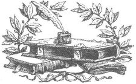

Bugün bir insan, Eski Ahit'in öğretilerini uygulamaya kalksa suçlu olur; Yeni Ahit'in öğretilerine sıkı sıkıya bağlı olursa da akıl hastası.
p
Pulluğun mucidi tespihin mucidinden daha yararlı olmuştur, çünkü ne derseniz deyin ama toprağı pulla sürmek dua etmekten daha iyidir.
p
Vaftiz, sabun varsa iyi bir şeydir.
p
Doğada ne ödül ne de ceza vardır, yalnızca sonuçlar.
Evet, bir insan Tanrı'nın, köleliği desteklediğine; kadınları ve çocukları öldürmeleri için askerleri komuta ettiğine; çokeşliliğe inandığına; sırf onun takdirinde diye zulmettiğine; sonsuza kadar cezalandırdığına ve inançsızlardan nefret ettiğine gerçekten inanıyorsa, bunun benim algıma etkisi kötü olacak. Zaten hep kötüydü. Engizisyon zindanlarını kuran da bu inançtı. Püriten'in, Quaker'ı[14] öldürmesine neden olan da bu inançtı.
p
Yalnızca birkaç ulus tek bir tanrıya sahip olacak kadar yoksul olmuştur. Tanrılar öyle kolay üretilir ve hammaddeleri de öyle masrafsızdır ki, genel olarak tanrı marketi tıka basa doludur ve cennet de bu hayaletlerle dolup taşmaktadır.
p
Hıristiyanlığın kurucusu çıkıp da, "İnanmak kurtulmak için şart değil, yalnızca harekete geçmek için gerekli; kardeşlerini gerçekten seven, kibar, dürüst, adil ve merhametli insanlar sonsuza kadar kutsanacaktır," deseydi, çıkıp yalnızca bunu demiş olsaydı, muhtemelen daha az zulüm yaşanırdı.
p
Tanrı'nın, erdemli insanları ödüllendireceğine ve günahkârları cezalandıracağına dair eski öğreti akıllardan yavaş yavaş siliniyor. Kötü insanlardan bazılarının, herkesin başarı dediği şeye sahip olduğunu biliyoruz. İyi insanlardan bazılarının da başarısızlık hasırında uzandığını görüyoruz. Hırsızların ziyafetlerde, dürüstlerin de aç olduğunu biliyoruz. Erdemlilerin genelde çaputlara sarılı olduğunu, oysa ahlaksızların her türlü rahatlığa sahip olduğunu biliyoruz.
p
Korku inanırken, cesaret şüphelenir. Korku yere kapaklanıp dua ederken, cesaret ayağa kalkıp düşünür. Korku geri çekilirken, cesaret ileri gider. Korku barbarlıktır, cesaret uygarlık. Korku büyücülüğe, şeytanlara ve hayaletlere inanır. Korku dindir, cesaretse bilim.
p
Yardım eden el, dua eden dudaktan yeğdir.

Kiliselerin birbirlerine güveni yok. Neden? Çünkü birbirlerini tanıyorlar.
p
Akla, gözleme ve deneyime dayalı bağımsızlık sonsuz bir acıyı hak ediyorken, İsa'ya iman etmenin sonsuz bir mutlulukla ödüllendirileceğine dair inanç, çürütülmek için fazla saçmadır ve ancak, adına "iman" denilen, delilik ve cahilliğin mutsuz karışımıyla yatıştırılabilir.
p
Emek, doğanın yanıt vereceği tek duadır. Bir yanıtı hak eden tek dua odur: düzgün, dürüst ve onurlu emek.
p
İncil'in etkisi, onu okuyanların cehaletine bağlıdır.
p
Papazlar dualarının gerçekten işe yaradığını düşünüyor ve kurbağalar da baharı vıraklayarak getirdiklerine inanıyor olabilirler.
p
Ruhban sınıfı da, ben de kendilerinin bir şey bilmediklerini biliyoruz.
p
Hıristiyanlığın insanlıkla ilgili öyle aşağılık bir kanısı var ki; insanların Tanrı inancıyla korkutulmadığı sürece doğru söyleyemeyeceğine inanıyor. Şu âna kadar insan türüyle ilgili bundan daha adi bir söz edilmemiştir.
p
Sonsuz Tanrı'nın, neden bu dünyada yaptığından daha iyisini başka bir dünyada yapabileceğini ummamız gerektiğini anlayamıyorum.
p
Kilisenin yetki alanının dürüst bir şekilde sorgulanabilmesi kesinlikle mümkün değildir; çünkü kilisenin haklı olduğunu düşünürseniz, o zaman sorgulamazsınız, ama kilisenin haksız olduğunu düşünürseniz, o zaman da kilise sizi sorgular.
Bütün sorulara "Tanrı" yanıtı verilmeye başladıkça, bilimsel sorgulama yapmak tek kelimeyle imkânsızdır.
p
Kâr dağıtımını, ancak hissedarların ölümünden sonra yapacağına söz veren bir şirkete ya da girişime ya da yatırıma en ufak bir güven duymam.